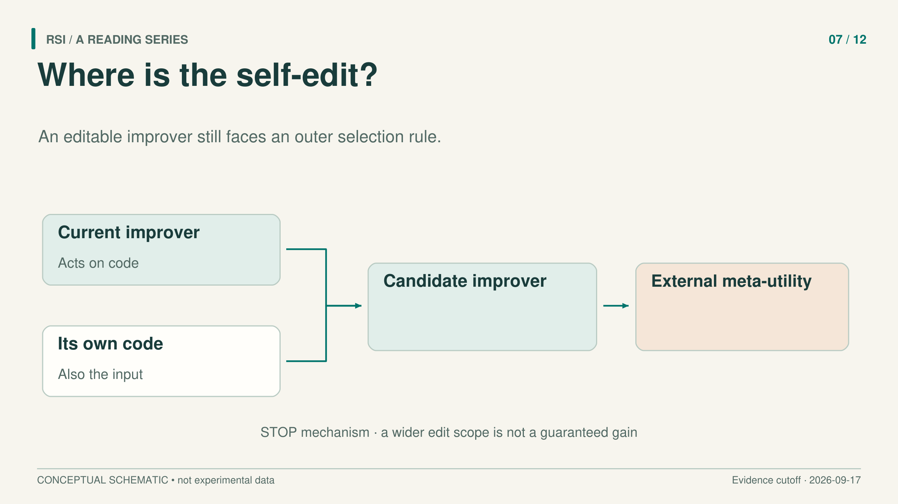
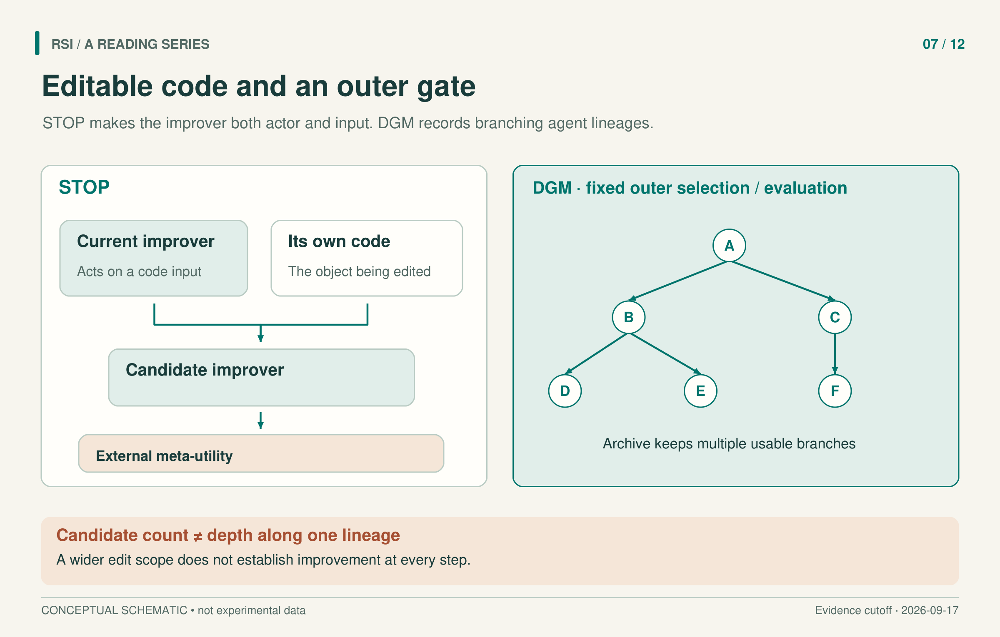

A code-writing agent usually has a fixed procedure around it: inspect a failure, ask a language model for a patch, run tests, and decide what to keep. If that procedure repeatedly makes poor choices, giving it more attempts may reproduce the same weaknesses. One approach is to make the procedure itself editable.
This creates two questions. Did the system change the machinery that produces modifications? And did the changed machinery become better at producing useful modifications? The first requires checking code changes and execution records. The second requires a controlled experiment.
STOP, Gödel Agent, and the Darwin Godel Machine explore different versions of this idea. Their differences become clearer when we identify the editable code, the persistent state, and the rules that still sit outside the loop.

Make the improver its own input
STOP begins with an improver: a program that receives code and a scoring function, calls a language model to propose changes, and returns an improved program. Its defining step is to give that improver its own implementation as the code to improve.
The current improver now occupies two roles. It is the running procedure that makes modifications, and its source code is the object being modified. The resulting program can change how subsequent candidates are produced. This is a concrete form of recursive code improvement; no change to the underlying language model is required.
A separate scoring function makes the objective explicit. STOP’s meta-utility evaluates a candidate improver by letting it improve programs on downstream tasks and measuring their average performance. The language model remains frozen. The researchers still specify the tasks, meta-utility, budgets, and number of outer iterations.
The scoring rule also limits the inference. A candidate that produces better downstream programs has demonstrated something about those tasks and conditions. It has not thereby proved that its next attempt to rewrite itself will improve again.
The experiments illustrate this distinction. On a noisy parity-learning problem, GPT-4 runs improved in average held-out performance during the early rounds, while GPT-3.5 and Mixtral runs declined on average. The authors also selected one favorable improver after four rounds and found that it outperformed the seed improver on five new downstream tasks. The transfer result concerns that selected program; it is not the success rate of every run.
Let the running agent inspect and replace its logic
Gödel Agent exposes self-inspection and code modification as runtime actions. A language model can inspect its implementation, interact with the environment, modify the task policy, and modify the logic that analyzes and makes changes. Runtime replacement of program components is often called monkey patching.
This places more of the running agent inside the editable boundary. The revised logic can affect the next recursive call. The task objective, environment, utility interface, and base model weights still provide external structure.
The name must also be read carefully. Gödel Agent accepts changes using empirical task feedback. It does not require a formal proof that a rewrite will improve utility. The earlier Gödel machine’s proof-based guarantees cannot be transferred to this method simply because both names refer to self-modification.
Its constrained and unconstrained variants demonstrate another experimental issue. The constrained Gödel-base result on MGSM is 64.2 ± 3.4%, compared with 53.4 ± 3.5% for the listed Meta Agent Search comparator, with 95% bootstrap intervals. Search uses GPT-4o; the optimized policy is tested with GPT-3.5. Saying that GPT-3.5 performed the whole optimization would erase that distinction.
The unconstrained Gödel-free variant can request stronger models such as GPT-4o. Its higher score therefore changes the available model resources as well as the program. That result may be useful, but it answers a different comparison from a fixed-model intervention.
Preserve branches instead of only the latest version
A single sequence of rewrites can discard a change that initially appears unhelpful. The Darwin Godel Machine, or DGM, uses an archive of coding agents. A selected parent reads evaluation logs, diagnoses weaknesses, and edits its own code. Tool implementations and the workflow for calling language models can change.
A child can enter the archive if it satisfies basic usability requirements, such as compiling and retaining the ability to edit repositories. It need not immediately outperform its parent. Parent selection favors strong agents with fewer children while retaining some opportunity for other usable parents.
The archive stores multiple development paths. An apparently unpromising intermediate program can remain available for later modification, and search can return to an earlier branch. Persistent agent code and persistent search history therefore play different roles in the same process.

The branches are schematic. They encode neither measured scores nor actual lineage counts. Total generated candidates and depth along one lineage are different quantities.
DGM still has an outer boundary. The base model is frozen, and the archive-maintenance, parent-selection, and outer search procedures are not available for self-modification in the reported setup. Editing the coding workflow is therefore a specific intervention with a defined surrounding process.
Read the curve’s statistical object
The main DGM runs each generated 80 new agents. That is a count of generation iterations, not a claim that one descendant chain became 80 levels deep. Branching makes those quantities different.
The paper reports that the archive’s best score on the 200-task SWE-bench Verified subset used in search rose from 20.0% to 50.0%. The 50.0% is not a result on the full SWE-bench Verified benchmark. On the full Polyglot reevaluation, the reported scores rose from 14.2% to 30.7%; those figures belong to their own model and evaluation setup.
An archive-best curve describes the best retained agent, not the last generated one. Search tasks are also part of the selection process, so these curves cannot all be read as results on untouched held-out tasks. The book’s discussion uses the examined DGM v3 from March 2026; its experiments should not all be attributed to the paper’s first public appearance in 2025.
Budget needs its own record. Equal numbers of generated agents do not establish equal model calls, tokens, execution time, or API cost. A better final agent may also spend more when solving a new task. The expense of developing an agent and the expense of deploying it should remain distinguishable.
Persistence also deserves a separate check. Saving a patch establishes that state can be written down; execution records must show whether a new task loads it and preserves its effect. This applies to code and workflows without requiring a weight update. An old-versus-new comparison should record the history each version reads, the tools it uses, and the resource limits held constant.
A further improver test could freeze both versions, let them generate fresh candidates under the same budget, and compare candidate quality. That proposed comparison separates a stronger current agent from a stronger ability to produce descendants.
These methods establish different ways to put the modifier inside an editable program. They also show why recursive structure alone does not ensure a rising performance trajectory. To assess a new system, locate the code that changed, identify what remained fixed, and ask whether the reported experiment measures task performance, the ability to generate improvements, or both.
Selected primary sources
STOP · Gödel Agent · Darwin Godel Machine.
Adapted from a book whose literature inclusion cutoff is September 17, 2026. Results refer to the versions examined there, not a new literature search.